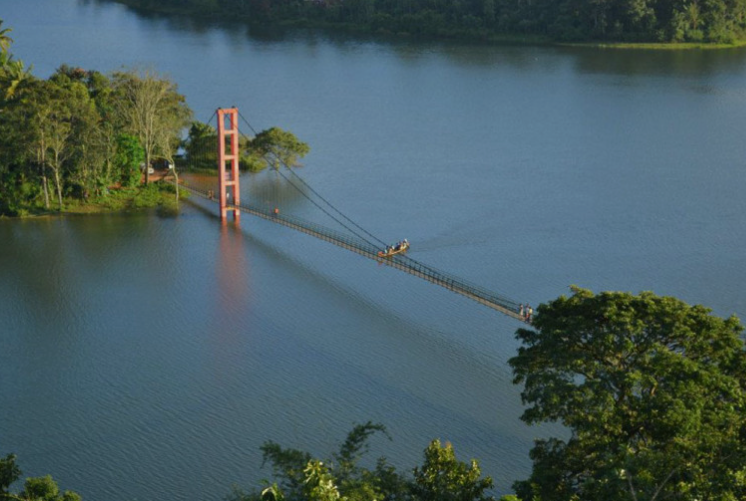
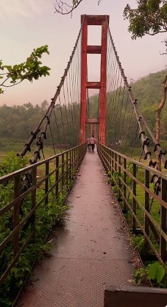
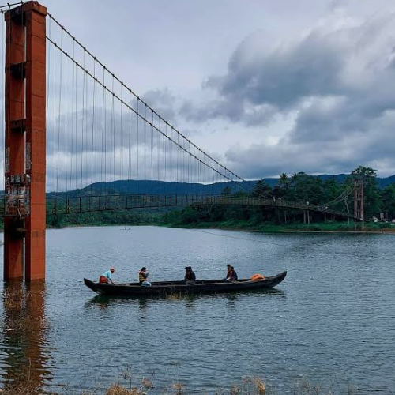
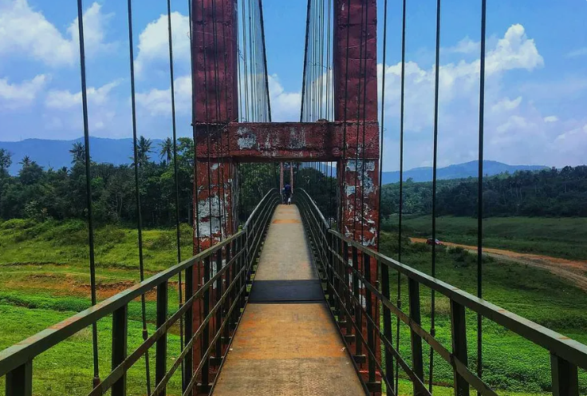
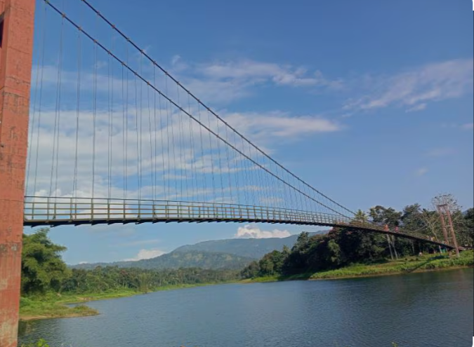

Ayyapancoil Hanging Bridge is one of the longest suspension bridges in Kerala, located in Ayyapancoil village of Idukki district. Built across the Periyar River, the bridge connects nearby villages and offers a safe and convenient route for local people. It has become a popular tourist attraction because of its unique structure and breathtaking views of the river and surrounding hills.
Walking across the bridge is an exciting experience as visitors can enjoy the cool breeze, scenic landscapes, and peaceful atmosphere. The area around the bridge is surrounded by lush greenery, making it an ideal place for photography, sightseeing, and relaxation. Ayyapancoil Hanging Bridge is a must-visit destination for nature lovers and adventure enthusiasts visiting Idukki.





Ayyappancoil Hanging Bridge is one of the longest suspension bridges in Kerala. It is located across the Periyar River in Ayyappancoil village of Idukki District. The bridge is about 200 metres long and connects Ayyappancoil Grama Panchayat with Kanchiyar Grama Panchayat. It is a popular tourist attraction known for its scenic beauty and thrilling walking experience. 0
The suspension bridge was built to provide year-round access across the Periyar River because the old road bridge becomes submerged when the water level of the Idukki Reservoir rises during the monsoon season. Today, it serves both local residents and tourists. 1
Visitors enjoy walking across the gently swaying suspension bridge while admiring the Periyar River, surrounding hills and forests. The nearby Ayyappancoil Sastha Temple and beautiful viewpoints also attract many visitors. 2
The bridge is surrounded by evergreen forests, hills and the Periyar River. The area supports rich biodiversity and offers a peaceful environment for nature lovers and photographers.
Today, Ayyappancoil Hanging Bridge is one of the most famous tourist attractions in Idukki. It is known for its engineering design, scenic beauty and importance as a year-round pedestrian crossing over the Periyar River. 3